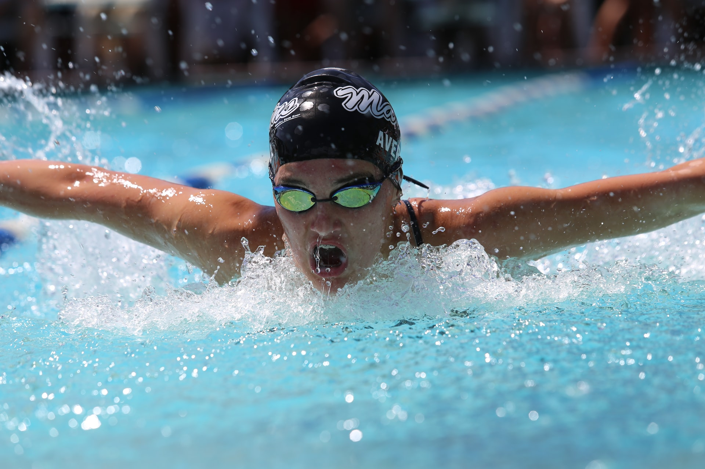

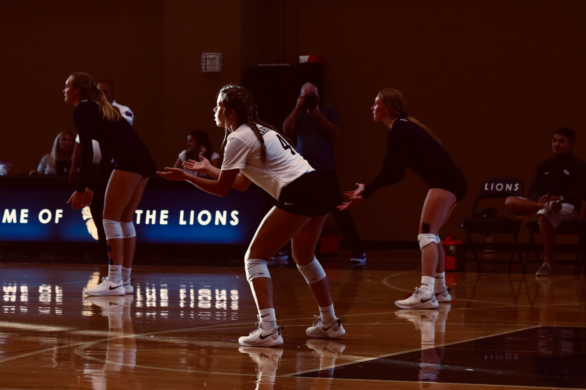
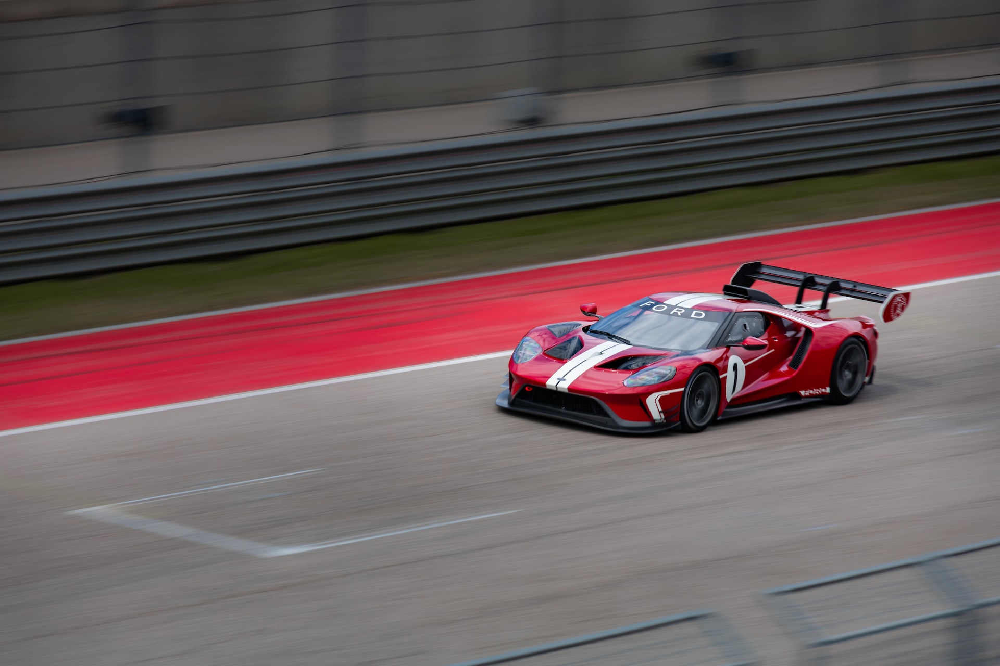
FOOTBALL
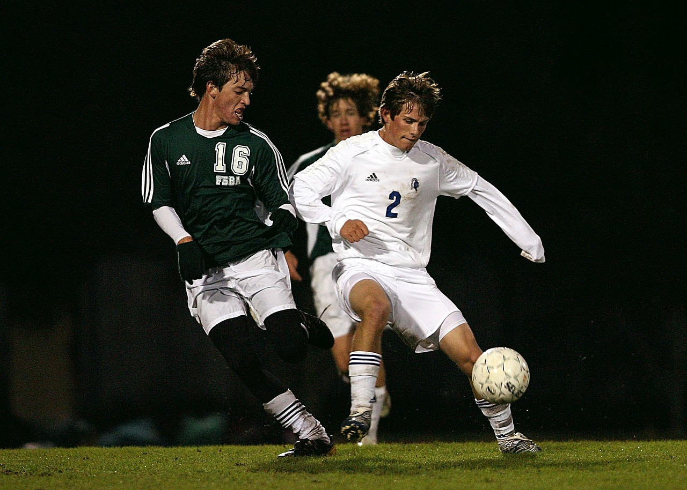
Football is a family of team sports that involve, to varying degrees, kicking a ball to score a goal. Unqualified, the word football normally means the form of football that is the most popular where the word is used. Sports commonly called football include association football (known as soccer in North America and Oceania); gridiron football (specifically American football or Canadian football); Australian rules football; rugby union and rugby league; and Gaelic football.[1] These various forms of football share to varying extent common origins and are known as football codes. There are a number of references to traditional, ancient, or prehistoric ball games played in many different parts of the world.[2][3][4] Contemporary codes of football can be traced back to the codification of these games at English public schools during the 19th century.[5][6] The expansion and cultural influence of the British Empire allowed these rules of football to spread to areas of British influence outside the directly controlled Empire.[7]
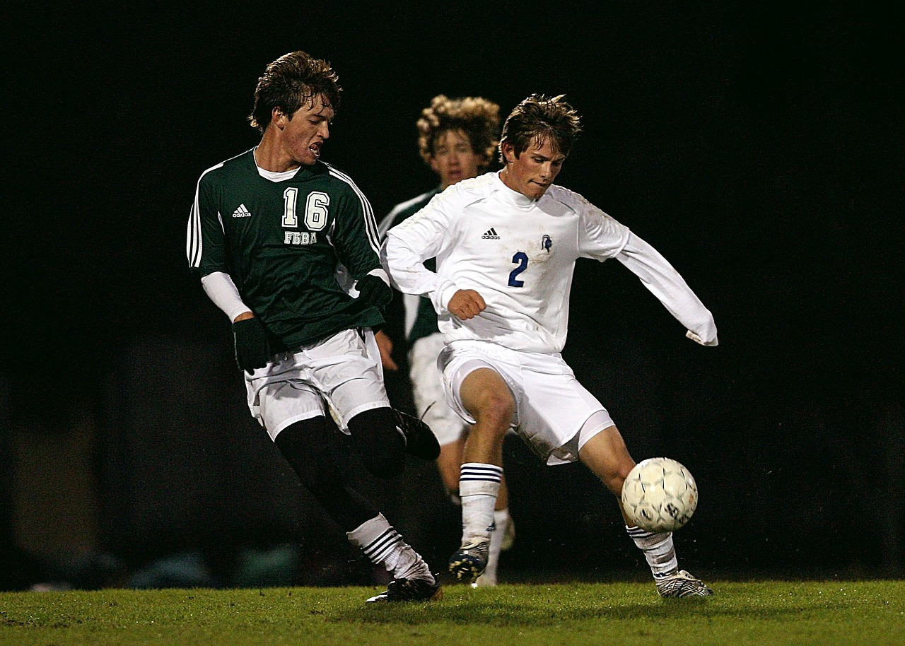
Football is a family of team sports that involve, to varying degrees, kicking a ball to score a goal. Unqualified, the word football normally means the form of football that is the most popular where the word is used. Sports commonly called football include association football (known as soccer in North America and Oceania); gridiron football (specifically American football or Canadian football); Australian rules football; rugby union and rugby league; and Gaelic football.[1] These various forms of football share to varying extent common origins and are known as football codes. There are a number of references to traditional, ancient, or prehistoric ball games played in many different parts of the world.[2][3][4] Contemporary codes of football can be traced back to the codification of these games at English public schools during the 19th century.[5][6] The expansion and cultural influence of the British Empire allowed these rules of football to spread to areas of British influence outside the directly controlled Empire.[7]
JUDO
Is karate or judo better?
While Karate is aggressive, Judo is a soft martial art that includes body maneuvers against the opponent. Karate focuses on attacking the opponent. Also focuses on winning purely through physically hurting. On the other hand, Judo focuses on grappling, pinning, and throwing the opponent to tire him or her.Can judo be used in a real fight?
Judo in MMA can be extremely effective, if you know what you are doing. Knowing Judo gives you some excellent moves to use in the cage. It improves your clinch work exponentially. Judoka do their best work while in the clinch.

Is karate or judo better?
While Karate is aggressive, Judo is a soft martial art that includes body maneuvers against the opponent. Karate focuses on attacking the opponent. Also focuses on winning purely through physically hurting. On the other hand, Judo focuses on grappling, pinning, and throwing the opponent to tire him or her.Can judo be used in a real fight?
Judo in MMA can be extremely effective, if you know what you are doing. Knowing Judo gives you some excellent moves to use in the cage. It improves your clinch work exponentially. Judoka do their best work while in the clinch.
TENNIS
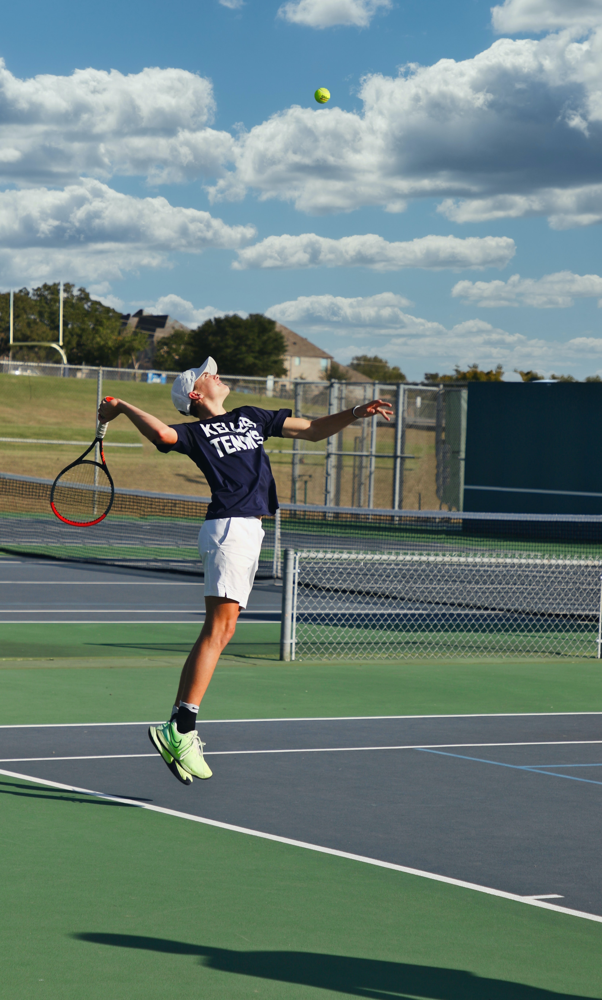
Tennis is a racket sport that can be played individually against a single opponent (singles) or between two teams of two players each (doubles). Each player uses a tennis racket that is strung with cord to strike a hollow rubber ball covered with felt over or around a net and into the opponent's court. The object of the game is to manoeuvre the ball in such a way that the opponent is not able to play a valid return. The player who is unable to return the ball validly will not gain a point, while the opposite player will.[1][2] Tennis is an Olympic sport and is played at all levels of society and at all ages. The sport can be played by anyone who can hold a racket, including wheelchair users. The modern game of tennis originated in Birmingham, England.
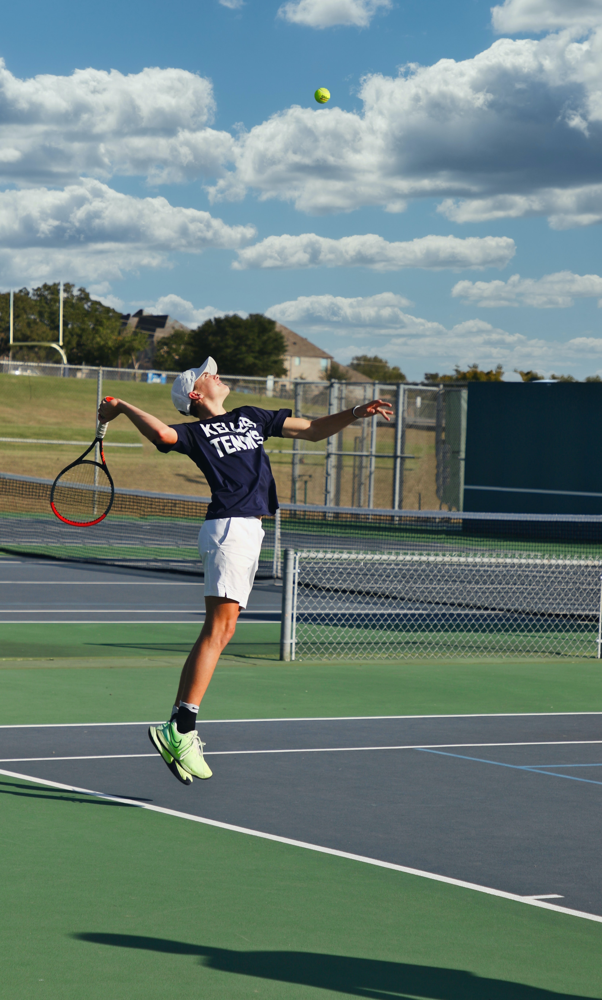
Tennis is a racket sport that can be played individually against a single opponent (singles) or between two teams of two players each (doubles). Each player uses a tennis racket that is strung with cord to strike a hollow rubber ball covered with felt over or around a net and into the opponent's court. The object of the game is to manoeuvre the ball in such a way that the opponent is not able to play a valid return. The player who is unable to return the ball validly will not gain a point, while the opposite player will.[1][2] Tennis is an Olympic sport and is played at all levels of society and at all ages. The sport can be played by anyone who can hold a racket, including wheelchair users. The modern game of tennis originated in Birmingham, England.
MOTORCYCLE RACING
Historically, "road racing" meant a course on closed public roads. This was once commonplace but currently only a few such circuits have survived, mostly in Europe. Races take place on public roads which have been temporarily closed to the public by legal orders from the local legislature. Two championships exist, the first is the International Road Racing Championship[clarification needed], the other is the Duke Road Racing Rankings. The latter accounts for the majority of road races that take place each season, with an award for the highest placed rider. Prominent road races include the Isle of Man TT, North West 200, and Ulster Grand Prix on long circuits. Ireland has many road racing circuits still in use. Other countries with road races are the Netherlands, Finland, Spain, Belgium, Germany, Great Britain (Oliver's Mount), the Czech Republic, Ukraine, New Zealand, Indonesia and Macau.
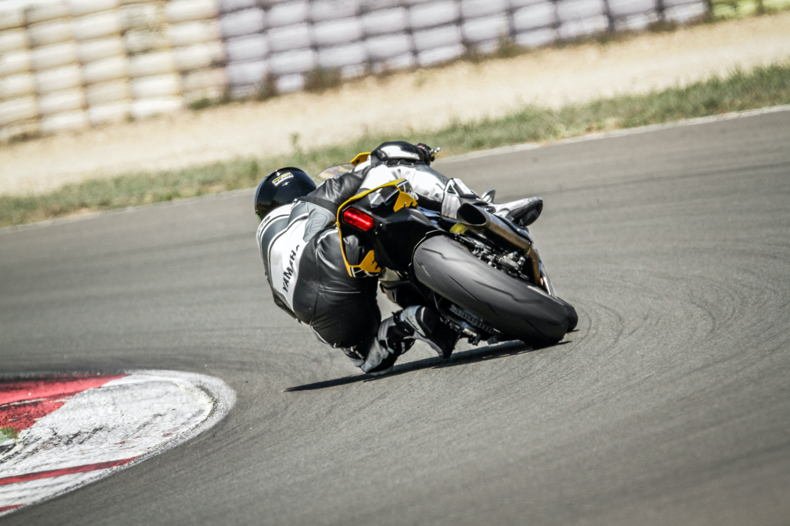
Historically, "road racing" meant a course on closed public roads. This was once commonplace but currently only a few such circuits have survived, mostly in Europe. Races take place on public roads which have been temporarily closed to the public by legal orders from the local legislature. Two championships exist, the first is the International Road Racing Championship[clarification needed], the other is the Duke Road Racing Rankings. The latter accounts for the majority of road races that take place each season, with an award for the highest placed rider. Prominent road races include the Isle of Man TT, North West 200, and Ulster Grand Prix on long circuits. Ireland has many road racing circuits still in use. Other countries with road races are the Netherlands, Finland, Spain, Belgium, Germany, Great Britain (Oliver's Mount), the Czech Republic, Ukraine, New Zealand, Indonesia and Macau.
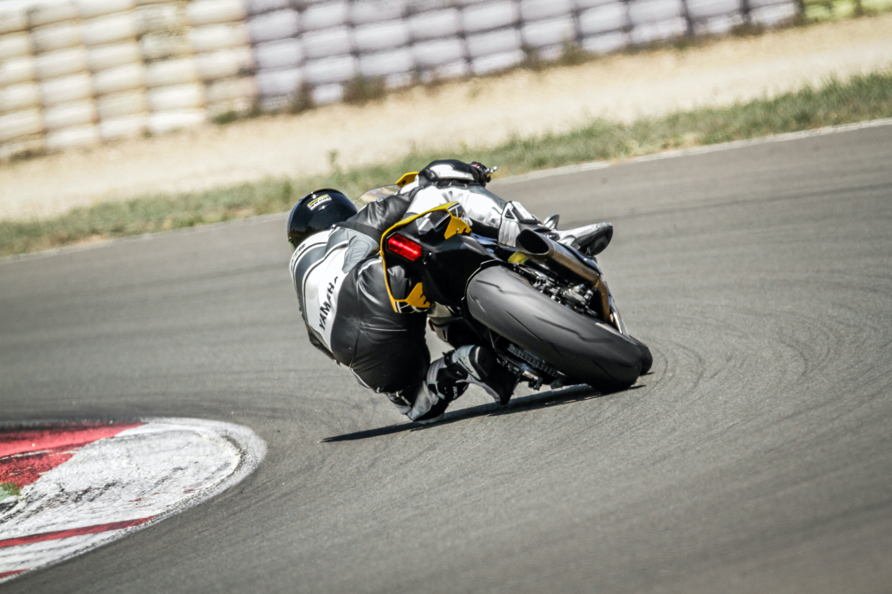
VOLLEY BALL
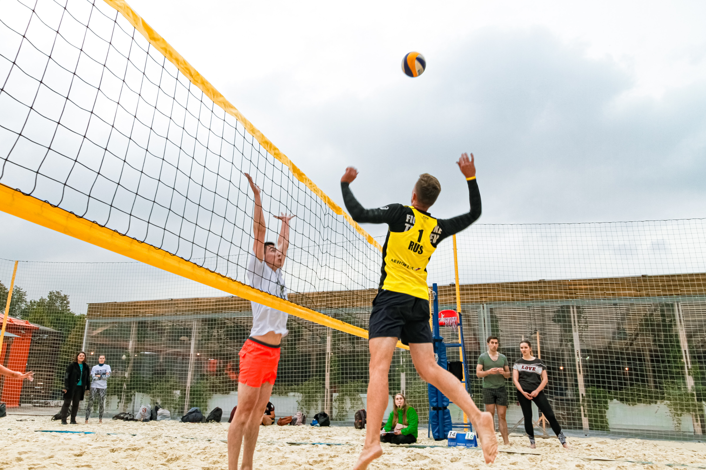
There are many numbers of physical games that one would like to play and Volleyball is one among them. Volleyball is great game that is loaded with lots of energy and fun. While some sports may have to be played using plenty number of equipments to play, volleyball, just needs to have a good ball and a net and could be played anywhere, where there is space, unlike other sports like basketball and golf which needs a specific area to play the game.
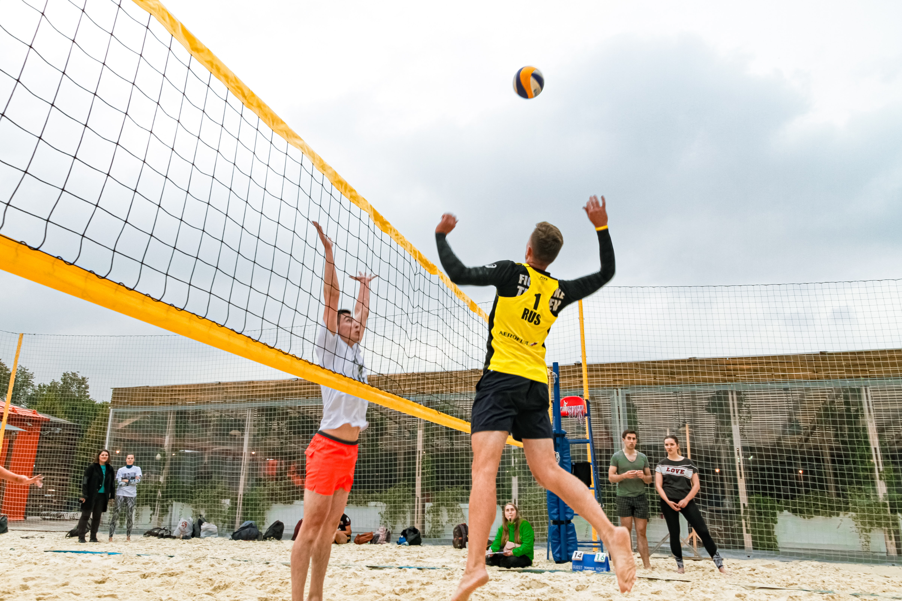
There are many numbers of physical games that one would like to play and Volleyball is one among them. Volleyball is great game that is loaded with lots of energy and fun. While some sports may have to be played using plenty number of equipments to play, volleyball, just needs to have a good ball and a net and could be played anywhere, where there is space, unlike other sports like basketball and golf which needs a specific area to play the game.
GOLF
A gulf is a large inlet from the ocean into the landmass, typically with a narrower opening than a bay, but that is not observable in all geographic areas so named. The term gulf was traditionally used for large highly-indented navigable bodies of salt water that are enclosed by the coastline.[1] Many gulfs are major shipping areas, such as the Persian Gulf, Gulf of Mexico, Gulf of Finland.The term gulf was traditionally used for large highly-indented navigable bodies of salt water that are enclosed by the coastline.[1] Many gulfs are major shipping areas,
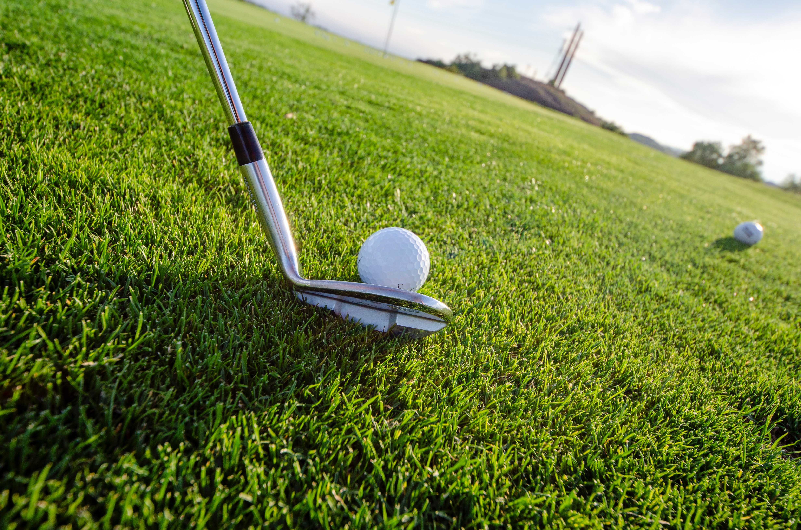
A gulf is a large inlet from the ocean into the landmass, typically with a narrower opening than a bay, but that is not observable in all geographic areas so named. The term gulf was traditionally used for large highly-indented navigable bodies of salt water that are enclosed by the coastline.[1] Many gulfs are major shipping areas, such as the Persian Gulf, Gulf of Mexico, Gulf of Finland.The term gulf was traditionally used for large highly-indented navigable bodies of salt water that are enclosed by the coastline.[1] Many gulfs are major shipping areas,
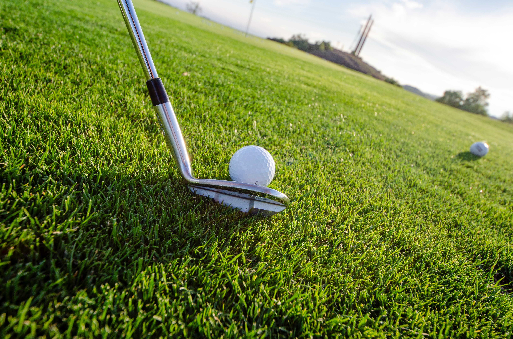
CHESS
 Chess is a board game for two players.[1] It is played on a square board, made up of 64 smaller squares, with eight squares in each row and column. Each player starts with sixteen pieces: eight pawns, two knights, two bishops, two rooks, one queen and one king.[2] The goal of the game is for each player to try. Checkmate is a threat ('check') to the opposing king which no move can stop. It ends the game.[3][4] During the game, the two opponents take turns to move one of their pieces to a different square of the board. One player ('White') has pieces of a light color; the other player ('Black') has pieces of a dark color.
Chess is a board game for two players.[1] It is played on a square board, made up of 64 smaller squares, with eight squares in each row and column. Each player starts with sixteen pieces: eight pawns, two knights, two bishops, two rooks, one queen and one king.[2] The goal of the game is for each player to try. Checkmate is a threat ('check') to the opposing king which no move can stop. It ends the game.[3][4] During the game, the two opponents take turns to move one of their pieces to a different square of the board. One player ('White') has pieces of a light color; the other player ('Black') has pieces of a dark color.
Chess is a board game for two players.[1] It is played on a square board, made up of 64 smaller squares, with eight squares in each row and column. Each player starts with sixteen pieces: eight pawns, two knights, two bishops, two rooks, one queen and one king.[2] The goal of the game is for each player to try. Checkmate is a threat ('check') to the opposing king which no move can stop. It ends the game.[3][4] During the game, the two opponents take turns to move one of their pieces to a different square of the board. One player ('White') has pieces of a light color; the other player ('Black') has pieces of a dark color.
BILLIARDS
Billiards, any of various games played on a rectangular table with a designated number of small balls and a long stick called a cue. The table and the cushioned rail bordering the table are topped with a feltlike tight-fitting cloth. Carom, or French, billiards is played with three balls on a table that has no pockets. The other principal games are played on tables that have six pockets, one at each corner and one in each of the long sides; these games include English billiards, played with three balls; snooker, played with 21 balls and a cue ball.
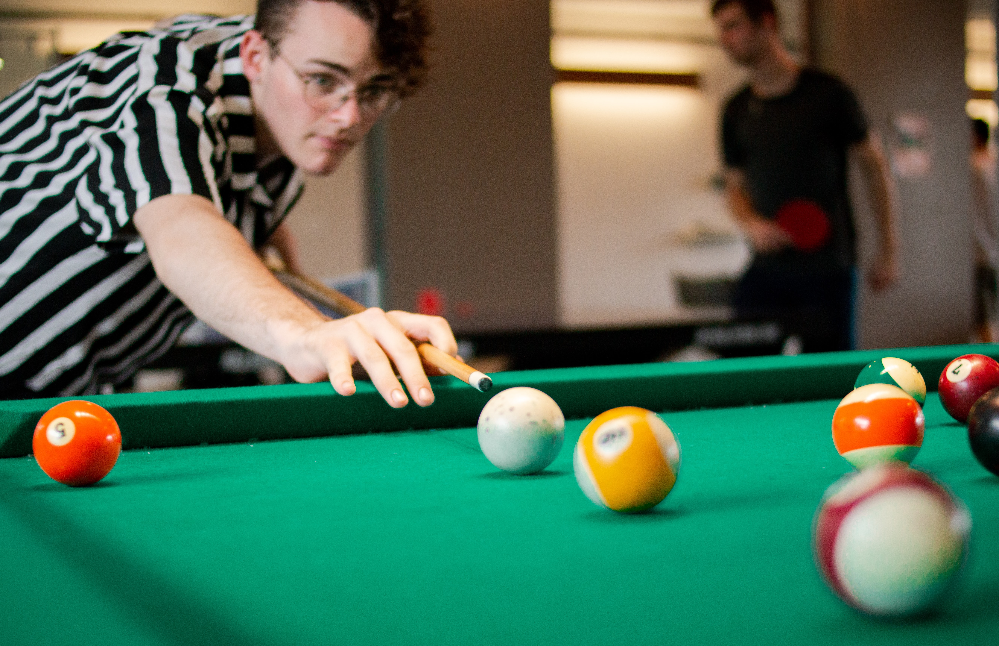
Billiards, any of various games played on a rectangular table with a designated number of small balls and a long stick called a cue. The table and the cushioned rail bordering the table are topped with a feltlike tight-fitting cloth. Carom, or French, billiards is played with three balls on a table that has no pockets. The other principal games are played on tables that have six pockets, one at each corner and one in each of the long sides; these games include English billiards, played with three balls; snooker, played with 21 balls and a cue ball.
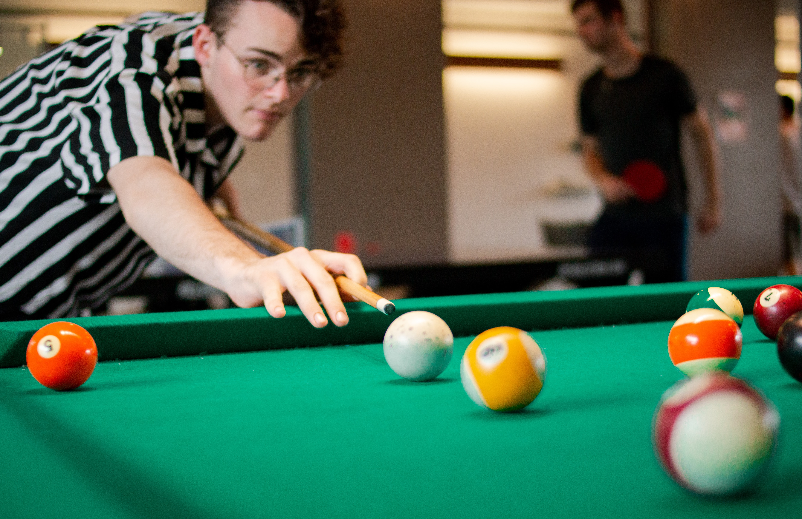
BADMINTON
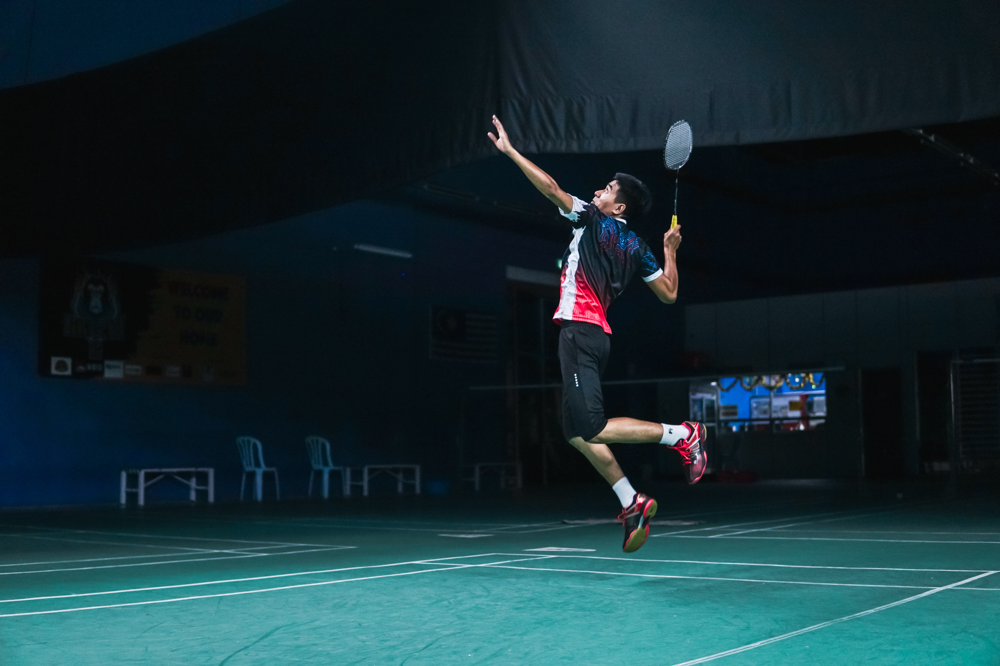
Badminton is a racquet sport played using racquets to hit a shuttlecock across a net. Although it may be played with larger teams, the most common forms of the game are "singles" (with one player per side) and "doubles" (with two players per side). Badminton is often played as a casual outdoor activity in a yard or on a beach; formal games are played on a rectangular indoor court. Points are scored by striking the shuttlecock with the racquet and landing it within the opposing side's half of the court. Each side may only strike the shuttlecock once before it passes over the net. Play ends once the shuttlecock has struck the floor or if a fault has been called by the umpire, service judge, or (in their absence) the opposing side.[1]
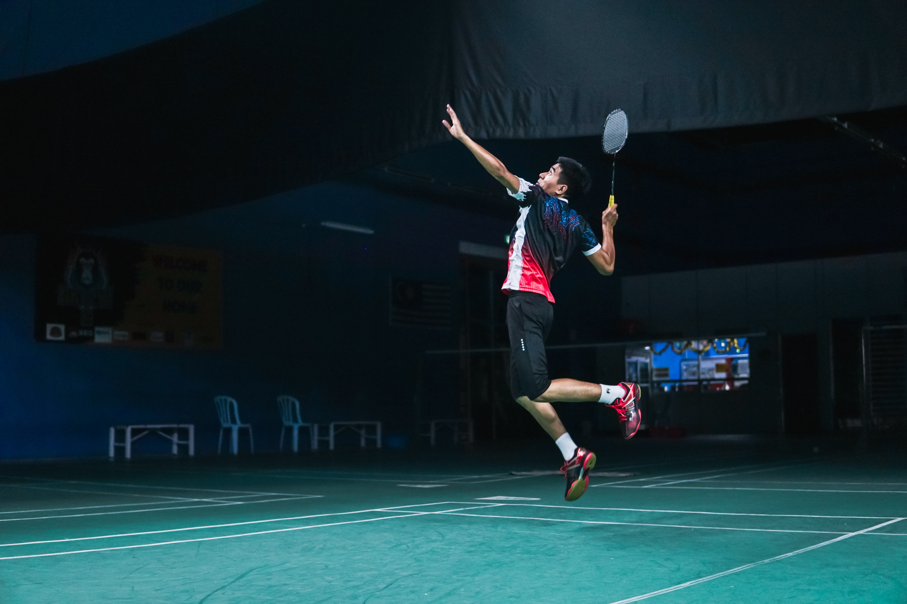
Badminton is a racquet sport played using racquets to hit a shuttlecock across a net. Although it may be played with larger teams, the most common forms of the game are "singles" (with one player per side) and "doubles" (with two players per side). Badminton is often played as a casual outdoor activity in a yard or on a beach; formal games are played on a rectangular indoor court. Points are scored by striking the shuttlecock with the racquet and landing it within the opposing side's half of the court. Each side may only strike the shuttlecock once before it passes over the net. Play ends once the shuttlecock has struck the floor or if a fault has been called by the umpire, service judge, or (in their absence) the opposing side.[1]
SWIMMING
Swimming is the most beneficial way to eases muscle pains & aches & alleviates stress. Swimming also helps to relax and improve the cardiovascular fitness. My father taught me swimming years back when I was just six years old. Learning swimming by my father was quite a fascinating experience for me because my father is a state level swimming champion.
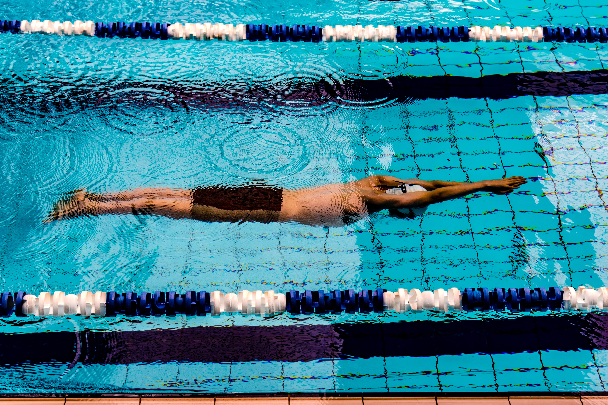
Swimming is the most beneficial way to eases muscle pains & aches & alleviates stress. Swimming also helps to relax and improve the cardiovascular fitness. My father taught me swimming years back when I was just six years old. Learning swimming by my father was quite a fascinating experience for me because my father is a state level swimming champion.
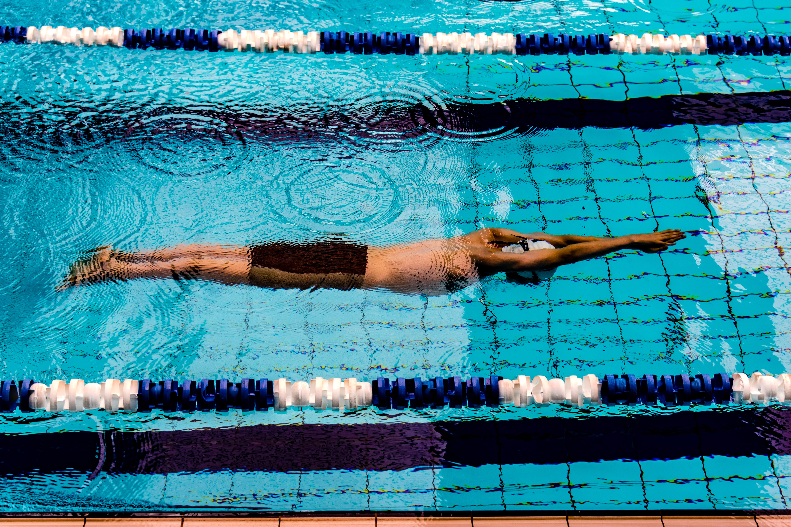
ATHLETICS
 There are two types of athletics events: track and field. Track events are running and walking races. Field events are jumping and throwing contests. Objects thrown by athletes include a hard disk, called a discus, and a light spear, called a javelinWhat are athletic skills?
The ten generally recognized components of physical fitness are: cardiorespiratory endurance, strength, stamina, flexibility, coordination, agility, balance, accuracy, power and speed
There are two types of athletics events: track and field. Track events are running and walking races. Field events are jumping and throwing contests. Objects thrown by athletes include a hard disk, called a discus, and a light spear, called a javelinWhat are athletic skills?
The ten generally recognized components of physical fitness are: cardiorespiratory endurance, strength, stamina, flexibility, coordination, agility, balance, accuracy, power and speed
There are two types of athletics events: track and field. Track events are running and walking races. Field events are jumping and throwing contests. Objects thrown by athletes include a hard disk, called a discus, and a light spear, called a javelinWhat are athletic skills?
The ten generally recognized components of physical fitness are: cardiorespiratory endurance, strength, stamina, flexibility, coordination, agility, balance, accuracy, power and speed